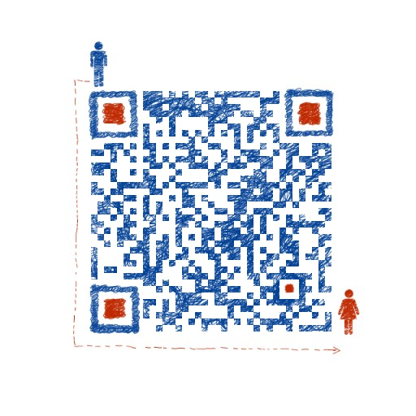

 <!DOCTYPE HTML>
<html>
<head><meta name="generator" content="Hexo 3.8.0">
  <meta charset="UTF-8">
  
    <title>隔壁小陈</title>
    <meta name="viewport" content="width=device-width, initial-scale=1,user-scalable=no">
    
    <meta name="author" content="小陈">
    

    
    <meta name="description" content="个人博客">
<meta property="og:type" content="website">
<meta property="og:title" content="隔壁小陈">
<meta property="og:url" content="http://yoursite.com/index.html">
<meta property="og:site_name" content="隔壁小陈">
<meta property="og:description" content="个人博客">
<meta property="og:locale" content="default">
<meta name="twitter:card" content="summary">
<meta name="twitter:title" content="隔壁小陈">
<meta name="twitter:description" content="个人博客">

    
    
    <link rel="icon" href="/img/favicon.ico">
    
    
    <link rel="apple-touch-icon" href="/img/jacman.jpg">
    <link rel="apple-touch-icon-precomposed" href="/img/jacman.jpg">
    
    <link rel="stylesheet" href="/css/style.css">
</head>
</html>
  <body>
    <header>
      
<div>
		
			<div id="imglogo">
				<a href="/"></a>
			</div>
			
			<div id="textlogo">
				<h1 class="site-name"><a href="/" title="隔壁小陈">隔壁小陈</a></h1>
				<h2 class="blog-motto"></h2>
			</div>
			<div class="navbar"><a class="navbutton navmobile" href="#" title="菜单">
			</a></div>
			<nav class="animated">
				<ul>
					<ul>
					 
						<li><a href="/">首页</a></li>
					
						<li><a href="/archives">时间轴</a></li>
					
						<li><a href="/about">关于小陈</a></li>
					
					<li>
 					
						<form class="search" action="https://www.baidu.com/s" target="_blank">
							<label>Search</label>
						<input name="s" type="hidden" value=""><input type="text" name="q" size="30" placeholder="搜索"><br>
						</form>
					
					</li>
				</ul>
			</ul></nav>			
</div>
    </header>
    <div id="container">
      <div id="main">

   
    
    <article class="post-expand post" itemprop="articleBody"> 
        <header class="article-info clearfix">
  <h1 itemprop="name">
    
      <a href="/2019/02/12/html1/" title="HTML5 | Application Cache" itemprop="url">HTML5 | Application Cache</a>
  </h1>
  <p class="article-author">By
       
		<a href="/about" title="小陈" target="_blank" itemprop="author">小陈</a>
		
  </p><p class="article-time">
    <time datetime="2019-02-11T17:37:54.000Z" itemprop="datePublished"> 发表于 2019-02-12</time>
    
  </p>
</header>
    <div class="article-content">
        
        <h2 id="什么是应用程序缓存（Application-Cache）？"><a href="#什么是应用程序缓存（Application-Cache）？" class="headerlink" title="什么是应用程序缓存（Application Cache）？"></a>什么是应用程序缓存（Application Cache）？</h2><p>web 应用可进行缓存，并可在没有因特网连接时进行访问。</p>
<h2 id="三大优势："><a href="#三大优势：" class="headerlink" title="三大优势："></a>三大优势：</h2><ul>
<li>离线浏览 - 用户可在应用离线时使用它们</li>
<li>速度 - 已缓存资源加载得更快</li>
<li>减少服务器负载 - 浏览器将只从服务器下载更新过或更改过的资源。</li>
</ul>
<h2 id="基础"><a href="#基础" class="headerlink" title="基础"></a>基础</h2><p>如需启用应用程序缓存，请在文档的 <html> 标签中包含 manifest 属性：</html></p>
<figure class="highlight plain"><table><tr><td class="gutter"><pre><span class="line">1</span><br><span class="line">2</span><br><span class="line">3</span><br><span class="line">4</span><br></pre></td><td class="code"><pre><span class="line">&lt;!DOCTYPE HTML&gt;</span><br><span class="line">&lt;html manifest=&quot;demo.appcache&quot;&gt;</span><br><span class="line">...</span><br><span class="line">&lt;/html&gt;</span><br></pre></td></tr></table></figure>
<p>每个指定了 manifest 的页面在用户对其访问时都会被缓存。如果未指定 manifest 属性，则页面不会被缓存（除非在 manifest 文件中直接指定了该页面）。</p>
<p>manifest 文件的建议的文件扩展名是：”.appcache”。</p>
<h2 id="注意"><a href="#注意" class="headerlink" title="注意"></a>注意</h2><p>manifest 文件需要配置正确的 <a href="https://blog.csdn.net/weixin_41593408/article/details/86684919" target="_blank" rel="noopener">MIME-type</a>，即 “text/cache-manifest”。必须在 web 服务器上进行配置。</p>
<h2 id="Manifest-文件"><a href="#Manifest-文件" class="headerlink" title="Manifest 文件"></a>Manifest 文件</h2><p>manifest 文件可分为三个部分：</p>
<ul>
<li>CACHE MANIFEST - 在此标题下列出的文件将在首次下载后进行缓存</li>
<li>NETWORK - 在此标题下列出的文件需要与服务器的连接，且不会被缓存</li>
<li>FALLBACK - 在此标题下列出的文件规定当页面无法访问时的回退页面（比如 404 页面）</li>
</ul>
<p>下面举个例子来说明一下：<br><strong>&gt;index.html</strong></p>
<figure class="highlight plain"><table><tr><td class="gutter"><pre><span class="line">1</span><br><span class="line">2</span><br><span class="line">3</span><br><span class="line">4</span><br><span class="line">5</span><br><span class="line">6</span><br><span class="line">7</span><br><span class="line">8</span><br><span class="line">9</span><br><span class="line">10</span><br><span class="line">11</span><br><span class="line">12</span><br><span class="line">13</span><br></pre></td><td class="code"><pre><span class="line">&lt;!DOCTYPE html&gt;</span><br><span class="line">&lt;html manifest=&quot;index.appcache&quot; &gt;   &lt;!-- manifest指定本地的缓存文件 --&gt;</span><br><span class="line">&lt;head lang=&quot;en&quot;&gt;</span><br><span class="line">    &lt;meta charset=&quot;UTF-8&quot;&gt;</span><br><span class="line">    &lt;title&gt;Document&lt;/title&gt;</span><br><span class="line">&lt;/head&gt;</span><br><span class="line">&lt;body&gt;</span><br><span class="line"> </span><br><span class="line">    &lt;script src=&quot;https://csdnimg.cn/public/common/libs/jquery/jquery-1.9.1.min.js&quot; type=&quot;text/javascript&quot;&gt;&lt;/script&gt;</span><br><span class="line">    &lt;script src=&quot;https://csdnimg.cn/rabbit/exposure-click/main-1.0.6.js&quot;&gt;&lt;/script&gt;</span><br><span class="line">    &lt;img src=&quot;http://wx2.sinaimg.cn/large/83940082gy1fpmpho2xl3j20nm11i0ws.jpg&quot; alt=&quot;&quot;&gt;</span><br><span class="line">&lt;/body&gt;</span><br><span class="line">&lt;/html&gt;</span><br></pre></td></tr></table></figure>
<p><strong>&gt;index.appcache</strong></p>
<figure class="highlight plain"><table><tr><td class="gutter"><pre><span class="line">1</span><br><span class="line">2</span><br><span class="line">3</span><br><span class="line">4</span><br><span class="line">5</span><br><span class="line">6</span><br><span class="line">7</span><br><span class="line">8</span><br><span class="line">9</span><br><span class="line">10</span><br><span class="line">11</span><br><span class="line">12</span><br><span class="line">13</span><br><span class="line">14</span><br><span class="line">15</span><br></pre></td><td class="code"><pre><span class="line">CACHE MANIFEST</span><br><span class="line"></span><br><span class="line"># 注释以#开头</span><br><span class="line"># 下面是要缓存的文件</span><br><span class="line">CACHE:</span><br><span class="line">https://csdnimg.cn/public/common/libs/jquery/jquery-1.9.1.min.js</span><br><span class="line">https://csdnimg.cn/rabbit/exposure-click/main-1.0.6.js</span><br><span class="line"></span><br><span class="line"># 指定必须联网才能访问的文件</span><br><span class="line">NETWORK:</span><br><span class="line">http://wx2.sinaimg.cn/large/83940082gy1fpmpho2xl3j20nm11i0ws.jpg</span><br><span class="line"></span><br><span class="line"># 网页无法访问时要访问的页面</span><br><span class="line">FALLBACK:</span><br><span class="line">404.html</span><br></pre></td></tr></table></figure>
<h2 id="浏览器支持"><a href="#浏览器支持" class="headerlink" title="浏览器支持"></a>浏览器支持</h2><p>所有主流浏览器均支持应用程序缓存，除了 Internet Explorer。</p>
<h2 id="Tips"><a href="#Tips" class="headerlink" title="Tips"></a>Tips</h2><ul>
<li>以 “#” 开头的是注释行，但也可满足其他用途。应用的缓存会在其 manifest 文件更改时被更新。</li>
<li>如果您编辑了一幅图片，或者修改了一个 JavaScript 函数，这些改变都不会被重新缓存。</li>
<li>更新注释行中的日期和版本号是一种使浏览器重新缓存文件的办法。</li>
</ul>
<h2 id="更新缓存"><a href="#更新缓存" class="headerlink" title="更新缓存"></a>更新缓存</h2><p>一旦应用被缓存，它就会保持缓存直到发生下列情况：</p>
<ul>
<li>用户清空浏览器缓存</li>
<li>manifest 文件被修改（阅读上面的tips）</li>
<li>由程序来更新应用缓存</li>
</ul>
<p><strong>实例</strong></p>
<figure class="highlight plain"><table><tr><td class="gutter"><pre><span class="line">1</span><br><span class="line">2</span><br><span class="line">3</span><br><span class="line">4</span><br><span class="line">5</span><br><span class="line">6</span><br><span class="line">7</span><br><span class="line">8</span><br><span class="line">9</span><br><span class="line">10</span><br><span class="line">11</span><br></pre></td><td class="code"><pre><span class="line">CACHE MANIFEST</span><br><span class="line"># 2012-02-21 v1.0.0</span><br><span class="line">/theme.css</span><br><span class="line">/logo.gif</span><br><span class="line">/main.js</span><br><span class="line"></span><br><span class="line">NETWORK:</span><br><span class="line">login.asp</span><br><span class="line"></span><br><span class="line">FALLBACK:</span><br><span class="line">/html5/ /404.html</span><br></pre></td></tr></table></figure>
<p><strong>温馨提示</strong></p>
<p>一旦文件被缓存，则浏览器会继续展示已缓存的版本，即使您修改了服务器上的文件。为了确保浏览器更新缓存，您需要更新 manifest 文件。</p>
<p><strong>容量问题：</strong> 某些浏览器对缓存数据的容量限制可能不太一样（某些浏览器设置的限制是每个站点 5MB）</p>

        
        
        <p class="article-more-link">
          
       </p>
    </div>
    <footer class="article-footer clearfix">
<div class="article-catetags">


  <div class="article-tags">
  
  <span></span> <a href="/tags/HTML5/">HTML5</a>
  </div>

</div>


<div class="comments-count">
	
</div>

</footer>


    </article>


   
    
    <article class="post-expand post" itemprop="articleBody"> 
        <header class="article-info clearfix">
  <h1 itemprop="name">
    
      <a href="/2019/02/12/sass2/" title="SASS用法指南" itemprop="url">SASS用法指南</a>
  </h1>
  <p class="article-author">By
       
		<a href="/about" title="小陈" target="_blank" itemprop="author">小陈</a>
		
  </p><p class="article-time">
    <time datetime="2019-02-11T17:36:26.000Z" itemprop="datePublished"> 发表于 2019-02-12</time>
    
  </p>
</header>
    <div class="article-content">
        
        <ul>
<li><a href="http://www.ruanyifeng.com/blog/2012/06/sass.html" target="_blank" rel="noopener">SASS用法指南</a></li>
</ul>

        
        
        <p class="article-more-link">
          
       </p>
    </div>
    <footer class="article-footer clearfix">
<div class="article-catetags">


  <div class="article-tags">
  
  <span></span> <a href="/tags/Sass/">Sass</a>
  </div>

</div>


<div class="comments-count">
	
</div>

</footer>


    </article>


   
    
    <article class="post-expand post" itemprop="articleBody"> 
        <header class="article-info clearfix">
  <h1 itemprop="name">
    
      <a href="/2019/02/12/sass1/" title="Sass | 今天有感" itemprop="url">Sass | 今天有感</a>
  </h1>
  <p class="article-author">By
       
		<a href="/about" title="小陈" target="_blank" itemprop="author">小陈</a>
		
  </p><p class="article-time">
    <time datetime="2019-02-11T16:33:55.000Z" itemprop="datePublished"> 发表于 2019-02-12</time>
    
  </p>
</header>
    <div class="article-content">
        
        <p>可从官网了解：<a href="http://sass-lang.com/documentation/file.SASS_REFERENCE.html" target="_blank" rel="noopener">http://sass-lang.com/documentation/file.SASS_REFERENCE.html</a></p>
<p>目录结构：<br></p>
<h2 id="test-scss"><a href="#test-scss" class="headerlink" title="test.scss"></a>test.scss</h2><figure class="highlight css"><table><tr><td class="gutter"><pre><span class="line">1</span><br><span class="line">2</span><br><span class="line">3</span><br><span class="line">4</span><br><span class="line">5</span><br><span class="line">6</span><br><span class="line">7</span><br><span class="line">8</span><br><span class="line">9</span><br><span class="line">10</span><br><span class="line">11</span><br><span class="line">12</span><br><span class="line">13</span><br><span class="line">14</span><br><span class="line">15</span><br><span class="line">16</span><br><span class="line">17</span><br><span class="line">18</span><br><span class="line">19</span><br><span class="line">20</span><br><span class="line">21</span><br><span class="line">22</span><br><span class="line">23</span><br><span class="line">24</span><br><span class="line">25</span><br><span class="line">26</span><br><span class="line">27</span><br><span class="line">28</span><br><span class="line">29</span><br><span class="line">30</span><br><span class="line">31</span><br><span class="line">32</span><br><span class="line">33</span><br><span class="line">34</span><br><span class="line">35</span><br><span class="line">36</span><br><span class="line">37</span><br><span class="line">38</span><br><span class="line">39</span><br><span class="line">40</span><br><span class="line">41</span><br><span class="line">42</span><br><span class="line">43</span><br><span class="line">44</span><br><span class="line">45</span><br><span class="line">46</span><br><span class="line">47</span><br><span class="line">48</span><br><span class="line">49</span><br><span class="line">50</span><br><span class="line">51</span><br><span class="line">52</span><br><span class="line">53</span><br><span class="line">54</span><br><span class="line">55</span><br><span class="line">56</span><br><span class="line">57</span><br><span class="line">58</span><br><span class="line">59</span><br><span class="line">60</span><br><span class="line">61</span><br><span class="line">62</span><br><span class="line">63</span><br><span class="line">64</span><br><span class="line">65</span><br><span class="line">66</span><br><span class="line">67</span><br><span class="line">68</span><br><span class="line">69</span><br><span class="line">70</span><br><span class="line">71</span><br><span class="line">72</span><br><span class="line">73</span><br><span class="line">74</span><br><span class="line">75</span><br><span class="line">76</span><br><span class="line">77</span><br><span class="line">78</span><br><span class="line">79</span><br><span class="line">80</span><br><span class="line">81</span><br><span class="line">82</span><br><span class="line">83</span><br><span class="line">84</span><br><span class="line">85</span><br><span class="line">86</span><br><span class="line">87</span><br><span class="line">88</span><br><span class="line">89</span><br><span class="line">90</span><br><span class="line">91</span><br><span class="line">92</span><br><span class="line">93</span><br><span class="line">94</span><br><span class="line">95</span><br><span class="line">96</span><br><span class="line">97</span><br><span class="line">98</span><br><span class="line">99</span><br><span class="line">100</span><br><span class="line">101</span><br><span class="line">102</span><br><span class="line">103</span><br><span class="line">104</span><br><span class="line">105</span><br><span class="line">106</span><br><span class="line">107</span><br><span class="line">108</span><br><span class="line">109</span><br><span class="line">110</span><br><span class="line">111</span><br><span class="line">112</span><br><span class="line">113</span><br><span class="line">114</span><br><span class="line">115</span><br><span class="line">116</span><br><span class="line">117</span><br><span class="line">118</span><br><span class="line">119</span><br><span class="line">120</span><br><span class="line">121</span><br><span class="line">122</span><br><span class="line">123</span><br><span class="line">124</span><br><span class="line">125</span><br><span class="line">126</span><br><span class="line">127</span><br><span class="line">128</span><br><span class="line">129</span><br><span class="line">130</span><br><span class="line">131</span><br><span class="line">132</span><br><span class="line">133</span><br><span class="line">134</span><br><span class="line">135</span><br><span class="line">136</span><br><span class="line">137</span><br><span class="line">138</span><br><span class="line">139</span><br><span class="line">140</span><br><span class="line">141</span><br><span class="line">142</span><br><span class="line">143</span><br><span class="line">144</span><br><span class="line">145</span><br></pre></td><td class="code"><pre><span class="line">//变量</span><br><span class="line">$blue : #bdc4fd;</span><br><span class="line"></span><br><span class="line"><span class="selector-tag">div</span> &#123;</span><br><span class="line">	<span class="attribute">coloe</span>: $blue;</span><br><span class="line">&#125;</span><br><span class="line"></span><br><span class="line"></span><br><span class="line">//变量(镶嵌在字符串之中)</span><br><span class="line">$side : left;</span><br><span class="line"></span><br><span class="line"><span class="selector-class">.router</span> &#123;</span><br><span class="line">	border-#&#123;$side&#125;-radius: 10px;</span><br><span class="line">&#125;</span><br><span class="line"></span><br><span class="line"></span><br><span class="line">//计算</span><br><span class="line"><span class="selector-tag">body</span> &#123;</span><br><span class="line">	<span class="attribute">margin</span>: (<span class="number">14px</span>/<span class="number">2</span>);</span><br><span class="line">	<span class="attribute">top</span>: <span class="number">100px</span>;</span><br><span class="line">	<span class="attribute">left</span>: <span class="number">200px</span>;</span><br><span class="line">&#125;</span><br><span class="line"></span><br><span class="line"></span><br><span class="line">//嵌套</span><br><span class="line"><span class="selector-tag">div</span> <span class="selector-tag">h1</span> &#123;</span><br><span class="line">	<span class="attribute">color</span>: <span class="number">#666</span>;</span><br><span class="line">&#125;</span><br><span class="line"></span><br><span class="line"><span class="selector-tag">div</span> &#123;</span><br><span class="line">	h1 &#123;</span><br><span class="line">		<span class="selector-tag">color</span>: <span class="selector-tag">aquamarine</span>;</span><br><span class="line">	&#125;</span><br><span class="line">&#125;</span><br><span class="line"></span><br><span class="line"></span><br><span class="line">//继承</span><br><span class="line"><span class="selector-class">.class</span> &#123;</span><br><span class="line">	<span class="attribute">border</span>: <span class="number">10px</span>;</span><br><span class="line">&#125;</span><br><span class="line"></span><br><span class="line"><span class="selector-class">.class2</span> &#123;</span><br><span class="line">	@extend .class;</span><br><span class="line">	<span class="selector-tag">font-size</span>: 10<span class="selector-tag">px</span>;</span><br><span class="line">&#125;</span><br><span class="line"></span><br><span class="line"></span><br><span class="line"><span class="comment">/*!</span></span><br><span class="line"><span class="comment">注意：要使用这个解析才能再css文件里面显示出来，否则识别出来是scss文件的解析</span></span><br><span class="line"><span class="comment">*/</span></span><br><span class="line"></span><br><span class="line">//Mixin有点像C语言的宏（macro），是可以重用的代码块。</span><br><span class="line">@<span class="keyword">mixin</span> left &#123;</span><br><span class="line">	<span class="selector-tag">float</span>: <span class="selector-tag">left</span>;</span><br><span class="line">	<span class="selector-tag">display</span>: <span class="selector-tag">inline</span>;</span><br><span class="line">&#125;</span><br><span class="line"></span><br><span class="line"><span class="selector-class">.div2</span> &#123;</span><br><span class="line">	@include left;</span><br><span class="line">&#125;</span><br><span class="line"></span><br><span class="line">//Mixin传参</span><br><span class="line">@<span class="keyword">mixin</span> left2($value : <span class="number">20px</span>) &#123;</span><br><span class="line">	<span class="selector-tag">float</span>: <span class="selector-tag">left</span>;</span><br><span class="line">	top: $value;</span><br><span class="line">&#125;</span><br><span class="line"></span><br><span class="line"><span class="selector-class">.div3</span> &#123;</span><br><span class="line">	@include left2(30px)</span><br><span class="line">&#125;</span><br><span class="line"></span><br><span class="line"></span><br><span class="line">//颜色函数</span><br><span class="line"><span class="selector-class">.foooter</span> &#123;</span><br><span class="line">	<span class="attribute">color</span>: <span class="built_in">lighten</span>(#cc3, 10%);</span><br><span class="line">&#125;</span><br><span class="line"></span><br><span class="line"><span class="selector-class">.foooter2</span> &#123;</span><br><span class="line">	color: lighten(#cc3, 10%); // #d6d65c</span><br><span class="line">&#125;</span><br><span class="line"></span><br><span class="line"><span class="selector-class">.foooter3</span> &#123;</span><br><span class="line">	color: darken(#cc3, 10%); // #a3a329</span><br><span class="line">&#125;</span><br><span class="line"></span><br><span class="line"><span class="selector-class">.foooter4</span> &#123;</span><br><span class="line">	color: grayscale(#cc3); // #808080</span><br><span class="line">&#125;</span><br><span class="line"></span><br><span class="line"><span class="selector-class">.foooter5</span> &#123;</span><br><span class="line">	color: complement(#cc3); // #33c</span><br><span class="line">&#125;</span><br><span class="line"></span><br><span class="line">//插入文件</span><br><span class="line">@<span class="keyword">import</span> <span class="string">'./scss/index.scss'</span>;</span><br><span class="line">@<span class="keyword">import</span> <span class="string">"foo.css"</span>;</span><br><span class="line"></span><br><span class="line"></span><br><span class="line"></span><br><span class="line">//条件语句</span><br><span class="line"><span class="selector-tag">p</span> &#123;</span><br><span class="line">	@if 1+1==2 &#123;</span><br><span class="line">		<span class="selector-tag">background</span>: <span class="selector-id">#1231</span>;</span><br><span class="line">	&#125;</span><br><span class="line"></span><br><span class="line">	@<span class="keyword">if</span> <span class="number">1</span>+<span class="number">1</span>&gt;<span class="number">2</span> &#123;</span><br><span class="line">		<span class="selector-tag">border</span>: <span class="selector-id">#666</span>;</span><br><span class="line">	&#125;</span><br><span class="line"></span><br><span class="line">	@<span class="keyword">else</span> &#123;</span><br><span class="line">		<span class="selector-tag">background</span>: <span class="selector-id">#ffffff</span>;</span><br><span class="line">	&#125;</span><br><span class="line">&#125;</span><br><span class="line"></span><br><span class="line">//循环语句</span><br><span class="line">@<span class="keyword">for</span> $i from <span class="number">1</span> to <span class="number">10</span> &#123;</span><br><span class="line">	.border-#&#123;$i&#125; &#123;</span><br><span class="line">		border: #&#123;$i&#125; solid blue;</span><br><span class="line">	&#125;</span><br><span class="line">&#125;</span><br><span class="line"></span><br><span class="line">$i: 6;</span><br><span class="line"></span><br><span class="line">@<span class="keyword">while</span> $i&gt;<span class="number">0</span> &#123;</span><br><span class="line">	.item-#&#123;$i&#125; &#123;</span><br><span class="line">		width: 2em * $i;</span><br><span class="line">	&#125;</span><br><span class="line"></span><br><span class="line">	$i: $i - 2;</span><br><span class="line">&#125;</span><br><span class="line"></span><br><span class="line">@<span class="keyword">each</span> $member in a,b,c,d &#123;</span><br><span class="line">	.#&#123;$member&#125; &#123;</span><br><span class="line">		background-image: url("/image/#&#123;$member&#125;.jpg");</span><br><span class="line">	&#125;</span><br><span class="line">&#125;</span><br><span class="line"></span><br><span class="line">//自定义函数</span><br><span class="line">@<span class="keyword">function</span> double($n)&#123;</span><br><span class="line">	@<span class="keyword">return</span> $n * <span class="number">2</span>; </span><br><span class="line">&#125;</span><br><span class="line"></span><br><span class="line"><span class="selector-id">#siderbar</span>&#123;</span><br><span class="line">	<span class="attribute">width</span>: <span class="built_in">double</span>(10)<span class="built_in">px</span>;	</span><br><span class="line">&#125;</span><br></pre></td></tr></table></figure>
<h2 id="scss-index-css"><a href="#scss-index-css" class="headerlink" title="./scss/index.css"></a>./scss/index.css</h2><figure class="highlight css"><table><tr><td class="gutter"><pre><span class="line">1</span><br><span class="line">2</span><br><span class="line">3</span><br><span class="line">4</span><br></pre></td><td class="code"><pre><span class="line">$index : 100px;</span><br><span class="line"><span class="selector-class">.vick</span>&#123;</span><br><span class="line">    <span class="attribute">backdrop-filter</span>: $index;</span><br><span class="line">&#125;</span><br></pre></td></tr></table></figure>
<h3 id="编译结果"><a href="#编译结果" class="headerlink" title="编译结果"></a>编译结果</h3><p>test.css</p>
<figure class="highlight css"><table><tr><td class="gutter"><pre><span class="line">1</span><br><span class="line">2</span><br><span class="line">3</span><br><span class="line">4</span><br><span class="line">5</span><br><span class="line">6</span><br><span class="line">7</span><br><span class="line">8</span><br><span class="line">9</span><br><span class="line">10</span><br><span class="line">11</span><br><span class="line">12</span><br><span class="line">13</span><br><span class="line">14</span><br><span class="line">15</span><br><span class="line">16</span><br><span class="line">17</span><br><span class="line">18</span><br><span class="line">19</span><br><span class="line">20</span><br><span class="line">21</span><br><span class="line">22</span><br><span class="line">23</span><br><span class="line">24</span><br><span class="line">25</span><br><span class="line">26</span><br><span class="line">27</span><br><span class="line">28</span><br><span class="line">29</span><br><span class="line">30</span><br><span class="line">31</span><br><span class="line">32</span><br><span class="line">33</span><br><span class="line">34</span><br><span class="line">35</span><br><span class="line">36</span><br><span class="line">37</span><br><span class="line">38</span><br><span class="line">39</span><br><span class="line">40</span><br><span class="line">41</span><br><span class="line">42</span><br><span class="line">43</span><br><span class="line">44</span><br><span class="line">45</span><br><span class="line">46</span><br><span class="line">47</span><br><span class="line">48</span><br><span class="line">49</span><br><span class="line">50</span><br><span class="line">51</span><br><span class="line">52</span><br><span class="line">53</span><br><span class="line">54</span><br><span class="line">55</span><br><span class="line">56</span><br><span class="line">57</span><br><span class="line">58</span><br><span class="line">59</span><br><span class="line">60</span><br><span class="line">61</span><br><span class="line">62</span><br><span class="line">63</span><br><span class="line">64</span><br><span class="line">65</span><br><span class="line">66</span><br><span class="line">67</span><br><span class="line">68</span><br><span class="line">69</span><br><span class="line">70</span><br><span class="line">71</span><br><span class="line">72</span><br><span class="line">73</span><br><span class="line">74</span><br><span class="line">75</span><br><span class="line">76</span><br><span class="line">77</span><br><span class="line">78</span><br><span class="line">79</span><br><span class="line">80</span><br><span class="line">81</span><br><span class="line">82</span><br><span class="line">83</span><br><span class="line">84</span><br><span class="line">85</span><br><span class="line">86</span><br><span class="line">87</span><br><span class="line">88</span><br><span class="line">89</span><br><span class="line">90</span><br><span class="line">91</span><br><span class="line">92</span><br><span class="line">93</span><br><span class="line">94</span><br><span class="line">95</span><br><span class="line">96</span><br><span class="line">97</span><br><span class="line">98</span><br><span class="line">99</span><br><span class="line">100</span><br><span class="line">101</span><br><span class="line">102</span><br><span class="line">103</span><br><span class="line">104</span><br><span class="line">105</span><br><span class="line">106</span><br><span class="line">107</span><br><span class="line">108</span><br><span class="line">109</span><br><span class="line">110</span><br></pre></td><td class="code"><pre><span class="line">@<span class="keyword">charset</span> <span class="string">"UTF-8"</span>;</span><br><span class="line">@<span class="keyword">import</span> url(foo.css);</span><br><span class="line"><span class="selector-tag">div</span> &#123;</span><br><span class="line">  <span class="attribute">coloe</span>: <span class="number">#bdc4fd</span>; &#125;</span><br><span class="line"></span><br><span class="line"><span class="selector-class">.router</span> &#123;</span><br><span class="line">  <span class="attribute">border-left-radius</span>: <span class="number">10px</span>; &#125;</span><br><span class="line"></span><br><span class="line"><span class="selector-tag">body</span> &#123;</span><br><span class="line">  <span class="attribute">margin</span>: <span class="number">7px</span>;</span><br><span class="line">  <span class="attribute">top</span>: <span class="number">100px</span>;</span><br><span class="line">  <span class="attribute">left</span>: <span class="number">200px</span>; &#125;</span><br><span class="line"></span><br><span class="line"><span class="selector-tag">div</span> <span class="selector-tag">h1</span> &#123;</span><br><span class="line">  <span class="attribute">color</span>: <span class="number">#666</span>; &#125;</span><br><span class="line"></span><br><span class="line"><span class="selector-tag">div</span> <span class="selector-tag">h1</span> &#123;</span><br><span class="line">  <span class="attribute">color</span>: aquamarine; &#125;</span><br><span class="line"></span><br><span class="line"><span class="selector-class">.class</span>, <span class="selector-class">.class2</span> &#123;</span><br><span class="line">  <span class="attribute">border</span>: <span class="number">10px</span>; &#125;</span><br><span class="line"></span><br><span class="line"><span class="selector-class">.class2</span> &#123;</span><br><span class="line">  <span class="attribute">font-size</span>: <span class="number">10px</span>; &#125;</span><br><span class="line"></span><br><span class="line"><span class="comment">/*!</span></span><br><span class="line"><span class="comment">注意：要使用这个解析才能再css文件里面显示出来，否则识别出来是scss文件的解析</span></span><br><span class="line"><span class="comment">*/</span></span><br><span class="line"><span class="selector-class">.div2</span> &#123;</span><br><span class="line">  <span class="attribute">float</span>: left;</span><br><span class="line">  <span class="attribute">display</span>: inline; &#125;</span><br><span class="line"></span><br><span class="line"><span class="selector-class">.div3</span> &#123;</span><br><span class="line">  <span class="attribute">float</span>: left;</span><br><span class="line">  <span class="attribute">top</span>: <span class="number">30px</span>; &#125;</span><br><span class="line"></span><br><span class="line"><span class="selector-class">.foooter</span> &#123;</span><br><span class="line">  <span class="attribute">color</span>: <span class="number">#d6d65c</span>; &#125;</span><br><span class="line"></span><br><span class="line"><span class="selector-class">.foooter2</span> &#123;</span><br><span class="line">  <span class="attribute">color</span>: <span class="number">#d6d65c</span>; &#125;</span><br><span class="line"></span><br><span class="line"><span class="selector-class">.foooter3</span> &#123;</span><br><span class="line">  <span class="attribute">color</span>: <span class="number">#a3a329</span>; &#125;</span><br><span class="line"></span><br><span class="line"><span class="selector-class">.foooter4</span> &#123;</span><br><span class="line">  <span class="attribute">color</span>: gray; &#125;</span><br><span class="line"></span><br><span class="line"><span class="selector-class">.foooter5</span> &#123;</span><br><span class="line">  <span class="attribute">color</span>: <span class="number">#3333cc</span>; &#125;</span><br><span class="line"></span><br><span class="line"><span class="selector-class">.vick</span> &#123;</span><br><span class="line">  <span class="attribute">backdrop-filter</span>: <span class="number">100px</span>; &#125;</span><br><span class="line"></span><br><span class="line"><span class="selector-tag">p</span> &#123;</span><br><span class="line">  <span class="attribute">background</span>: <span class="number">#1231</span>;</span><br><span class="line">  <span class="attribute">background</span>: <span class="number">#ffffff</span>; &#125;</span><br><span class="line"></span><br><span class="line"><span class="selector-class">.border-1</span> &#123;</span><br><span class="line">  <span class="attribute">border</span>: <span class="number">1</span> solid blue; &#125;</span><br><span class="line"></span><br><span class="line"><span class="selector-class">.border-2</span> &#123;</span><br><span class="line">  <span class="attribute">border</span>: <span class="number">2</span> solid blue; &#125;</span><br><span class="line"></span><br><span class="line"><span class="selector-class">.border-3</span> &#123;</span><br><span class="line">  <span class="attribute">border</span>: <span class="number">3</span> solid blue; &#125;</span><br><span class="line"></span><br><span class="line"><span class="selector-class">.border-4</span> &#123;</span><br><span class="line">  <span class="attribute">border</span>: <span class="number">4</span> solid blue; &#125;</span><br><span class="line"></span><br><span class="line"><span class="selector-class">.border-5</span> &#123;</span><br><span class="line">  <span class="attribute">border</span>: <span class="number">5</span> solid blue; &#125;</span><br><span class="line"></span><br><span class="line"><span class="selector-class">.border-6</span> &#123;</span><br><span class="line">  <span class="attribute">border</span>: <span class="number">6</span> solid blue; &#125;</span><br><span class="line"></span><br><span class="line"><span class="selector-class">.border-7</span> &#123;</span><br><span class="line">  <span class="attribute">border</span>: <span class="number">7</span> solid blue; &#125;</span><br><span class="line"></span><br><span class="line"><span class="selector-class">.border-8</span> &#123;</span><br><span class="line">  <span class="attribute">border</span>: <span class="number">8</span> solid blue; &#125;</span><br><span class="line"></span><br><span class="line"><span class="selector-class">.border-9</span> &#123;</span><br><span class="line">  <span class="attribute">border</span>: <span class="number">9</span> solid blue; &#125;</span><br><span class="line"></span><br><span class="line"><span class="selector-class">.item-6</span> &#123;</span><br><span class="line">  <span class="attribute">width</span>: <span class="number">12em</span>; &#125;</span><br><span class="line"></span><br><span class="line"><span class="selector-class">.item-4</span> &#123;</span><br><span class="line">  <span class="attribute">width</span>: <span class="number">8em</span>; &#125;</span><br><span class="line"></span><br><span class="line"><span class="selector-class">.item-2</span> &#123;</span><br><span class="line">  <span class="attribute">width</span>: <span class="number">4em</span>; &#125;</span><br><span class="line"></span><br><span class="line"><span class="selector-class">.a</span> &#123;</span><br><span class="line">  <span class="attribute">background-image</span>: <span class="built_in">url</span>(<span class="string">"/image/a.jpg"</span>); &#125;</span><br><span class="line"></span><br><span class="line"><span class="selector-class">.b</span> &#123;</span><br><span class="line">  <span class="attribute">background-image</span>: <span class="built_in">url</span>(<span class="string">"/image/b.jpg"</span>); &#125;</span><br><span class="line"></span><br><span class="line"><span class="selector-class">.c</span> &#123;</span><br><span class="line">  <span class="attribute">background-image</span>: <span class="built_in">url</span>(<span class="string">"/image/c.jpg"</span>); &#125;</span><br><span class="line"></span><br><span class="line"><span class="selector-class">.d</span> &#123;</span><br><span class="line">  <span class="attribute">background-image</span>: <span class="built_in">url</span>(<span class="string">"/image/d.jpg"</span>); &#125;</span><br><span class="line"></span><br><span class="line"><span class="selector-id">#siderbar</span> &#123;</span><br><span class="line">  <span class="attribute">width</span>: <span class="number">20</span> px; &#125;</span><br><span class="line"></span><br><span class="line"><span class="comment">/*# sourceMappingURL=test.css.map */</span></span><br></pre></td></tr></table></figure>
<ul>
<li>安装</li>
</ul>
<p>SASS是Ruby语言写的，但是两者的语法没有关系。不懂Ruby，照样使用。只是必须先安装Ruby，然后再安装SASS。</p>
<p>假定你已经安装好了Ruby，接着在命令行输入下面的命令：</p>
<p>　　</p>
<blockquote>
<p>gem install sass</p>
</blockquote>
<p>然后，就可以使用了。</p>
<ul>
<li>使用</li>
</ul>
<p>SASS文件就是普通的文本文件，里面可以直接使用CSS语法。文件后缀名是.scss，意思为Sassy CSS。</p>
<p>下面的命令，可以在屏幕上显示.scss文件转化的css代码。（假设文件名为test。）</p>
<p>　　</p>
<blockquote>
<p>sass test.scss</p>
</blockquote>
<p>如果要将显示结果保存成文件，后面再跟一个.css文件名。</p>
<p>　　</p>
<blockquote>
<p>sass test.scss test.css</p>
</blockquote>
<p>SASS提供四个编译风格的选项：</p>
<p>　　</p>
<ol>
<li>nested：嵌套缩进的css代码，它是默认值</li>
<li>expanded：没有缩进的、扩展的css代码</li>
<li>compact：简洁格式的css代码</li>
<li>compressed：压缩后的css代码</li>
</ol>
<p>生产环境当中，一般使用最后一个选项。</p>
<p>　　</p>
<blockquote>
<p>sass –style compressed test.sass test.css</p>
</blockquote>
<p>你也可以让SASS监听某个文件或目录，一旦源文件有变动，就自动生成编译后的版本。</p>
<p>　　</p>
<blockquote>
<p>// watch a file</p>
<p>　　sass –watch input.scss:output.css</p>
<p>　　// watch a directory</p>
<p>　　sass –watch app/sass:public/stylesheets</p>
</blockquote>
<p>SASS的官方网站，提供了一个<a href="https://www.sassmeister.com/" target="_blank" rel="noopener">在线转换器</a>。你可以在那里，试运行下面的各种例子。</p>

        
        
        <p class="article-more-link">
          
       </p>
    </div>
    <footer class="article-footer clearfix">
<div class="article-catetags">


  <div class="article-tags">
  
  <span></span> <a href="/tags/Sass/">Sass</a>
  </div>

</div>


<div class="comments-count">
	
</div>

</footer>


    </article>


</div>
      <div class="openaside"><a class="navbutton" href="#" title="显示侧边栏"></a></div>

<div id="asidepart">
<div class="closeaside"><a class="closebutton" href="#" title="隐藏侧边栏"></a></div>
<aside class="clearfix">

  


  

  
<div class="tagslist">
	<p class="asidetitle">标签</p>
		<ul class="clearfix">
		
			
				<li><a href="/tags/Sass/" title="Sass">Sass<sup>2</sup></a></li>
			
		
			
				<li><a href="/tags/HTML5/" title="HTML5">HTML5<sup>1</sup></a></li>
			
		
		</ul>
</div>


  <div class="linkslist">
  <p class="asidetitle">友情链接</p>
    <ul>
        
          <li>
            
            	<a href="http://momentjs.com/" target="_blank" title="Moment">Moment</a>
            
          </li>
        
          <li>
            
            	<a href="https://www.inoreader.com/" target="_blank" title="inoreader">inoreader</a>
            
          </li>
        
          <li>
            
            	<a href="https://gulpjs.com/" target="_blank" title="Gulp">Gulp</a>
            
          </li>
        
          <li>
            
            	<a href="http://www.ruanyifeng.com/blog/" target="_blank" title="阮一峰官网">阮一峰官网</a>
            
          </li>
        
          <li>
            
            	<a href="https://www.easyswoole.com/" target="_blank" title="EasySwoole">EasySwoole</a>
            
          </li>
        
    </ul>
</div>

  


  <div class="linkslist">
  <p class="asidetitle">其他博客</p>
    <ul>
        
          <li>
            
            	<a href="https://me.csdn.net/weixin_41593408/" target="_blank" title="CSDN">CSDN</a>
            
          </li>
        
          <li>
            
            	<a href="https://juejin.im/user/5c4aa1cfe51d45524d1f0b04/" target="_blank" title="掘金">掘金</a>
            
          </li>
        
    </ul>
</div>

  <div class="weiboshow">
  <p class="asidetitle">微信</p>
  <div style="display:flex;flex-direction:column;">
    <div>
      
    </div>
    <div></div>
  </div>
</div>


</aside>
</div>
    </div>
    <footer><div id="footer">
	
	<div class="line">
		<span></span>
		<div class="author"></div>
	</div>
	
	
	<section class="info">
		<p> Hello ,我是隔壁小陈. <br>
			愿你每天都有收获。Good Lucky.</p>
	</section>
	 
	<div class="social-font">
		
		<a href="http://weibo.com/6909940520" target="_blank" class="icon-weibo" title="微博"></a>
		
		
		
		
		
		
		
		
		
		
		<a href="mailto:1724264854@qq.com" target="_blank" class="icon-email" title="Email Me"></a>
		
	</div>
			
		

		<p class="copyright">
		Powered by <a href="http://hexo.io" target="_blank" title="hexo">hexo</a> and Theme by <a href="https://github.com/wuchong/jacman" target="_blank" title="Jacman">Jacman</a> © 2019 
		
		<a href="/about" target="_blank" title="小陈">小陈</a>
		
		
		</p>
</div>
</footer>
    <script src="/js/jquery-2.0.3.min.js"></script>
<script src="/js/jquery.imagesloaded.min.js"></script>
<script src="/js/gallery.js"></script>
<script src="/js/jquery.qrcode-0.12.0.min.js"></script>

<script type="text/javascript">
$(document).ready(function(){ 
  $('.navbar').click(function(){
    $('header nav').toggleClass('shownav');
  });
  var myWidth = 0;
  function getSize(){
    if( typeof( window.innerWidth ) == 'number' ) {
      myWidth = window.innerWidth;
    } else if( document.documentElement && document.documentElement.clientWidth) {
      myWidth = document.documentElement.clientWidth;
    };
  };
  var m = $('#main'),
      a = $('#asidepart'),
      c = $('.closeaside'),
      o = $('.openaside');
  c.click(function(){
    a.addClass('fadeOut').css('display', 'none');
    o.css('display', 'block').addClass('fadeIn');
    m.addClass('moveMain');
  });
  o.click(function(){
    o.css('display', 'none').removeClass('beforeFadeIn');
    a.css('display', 'block').removeClass('fadeOut').addClass('fadeIn');      
    m.removeClass('moveMain');
  });
  $(window).scroll(function(){
    o.css("top",Math.max(80,260-$(this).scrollTop()));
  });
  
  $(window).resize(function(){
    getSize(); 
    if (myWidth >= 1024) {
      $('header nav').removeClass('shownav');
    }else{
      m.removeClass('moveMain');
      a.css('display', 'block').removeClass('fadeOut');
      o.css('display', 'none');
        
    }
  });
});
</script>


<link rel="stylesheet" href="/fancybox/jquery.fancybox.css" media="screen" type="text/css">
<script src="/fancybox/jquery.fancybox.pack.js"></script>
<script type="text/javascript">
$(document).ready(function(){ 
  $('.article-content').each(function(i){
    $(this).find('img').each(function(){
      if ($(this).parent().hasClass('fancybox')) return;
      var alt = this.alt;
      if (alt) $(this).after('<span class="caption">' + alt + '</span>');
      $(this).wrap('<a href="' + this.src + '" title="' + alt + '" class="fancybox"></a>');
    });
    $(this).find('.fancybox').each(function(){
      $(this).attr('rel', 'article' + i);
    });
  });
  if($.fancybox){
    $('.fancybox').fancybox();
  }
}); 
</script>


<!-- Analytics Begin -->


<script>
var _hmt = _hmt || [];
(function() {
  var hm = document.createElement("script");
  hm.src = "//hm.baidu.com/hm.js?e6d1f421bbc9962127a50488f9ed37d1";
  var s = document.getElementsByTagName("script")[0]; 
  s.parentNode.insertBefore(hm, s);
})();
</script>


<!-- Analytics End -->

<!-- Totop Begin -->

	<div id="totop">
	<a title="返回顶部"></a>
	</div>
	<script src="/js/totop.js"></script>

<!-- Totop End -->

<!-- MathJax Begin -->
<!-- mathjax config similar to math.stackexchange -->

<script type="text/x-mathjax-config">
  MathJax.Hub.Config({
    tex2jax: {
      inlineMath: [ ['$','$'], ["\\(","\\)"] ],
      processEscapes: true
    }
  });
</script>

<script type="text/x-mathjax-config">
    MathJax.Hub.Config({
      tex2jax: {
        skipTags: ['script', 'noscript', 'style', 'textarea', 'pre', 'code']
      }
    });
</script>

<script type="text/x-mathjax-config">
    MathJax.Hub.Queue(function() {
        var all = MathJax.Hub.getAllJax(), i;
        for(i=0; i < all.length; i += 1) {
            all[i].SourceElement().parentNode.className += ' has-jax';
        }
    });
</script>

<script type="text/javascript" src="http://cdn.mathjax.org/mathjax/latest/MathJax.js?config=TeX-AMS-MML_HTMLorMML">
</script>


<!-- MathJax End -->

<!-- Tiny_search Begin -->

<!-- Tiny_search End -->

  </body>
 </html>
